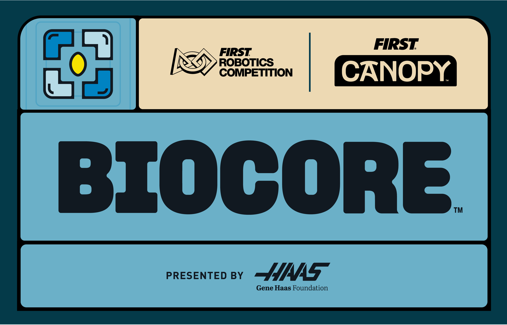

Presented by Haas
BIOCORE is the 2027 FIRST Robotics Competition game in the FIRST CANOPY season. Teams will use their engineering skills to explore the fundamental mechanisms that support life on Earth.
Presenting sponsor Haas puts the spotlight on machining and design, showing how innovation and teamwork open the door to careers in manufacturing.

Saturday, January 9, 202712:00 p.m. ET
The full game, field, and rules will be revealed during the Kickoff broadcast. Check back after Kickoff for the full season overview.